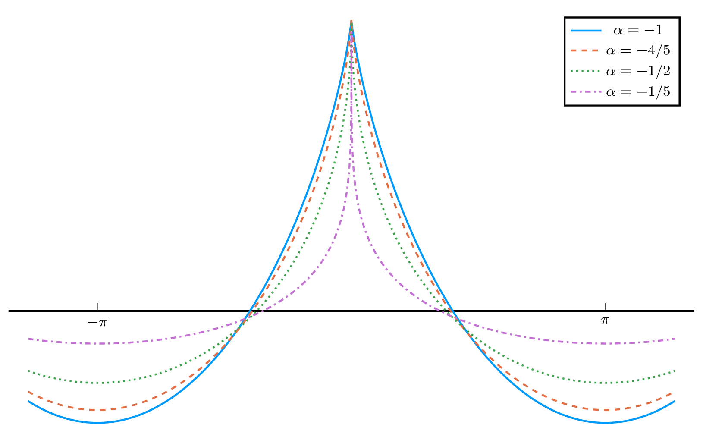

Week 3 Lecture 2: Computer-assisted proofs for continuous problems
In the previous lecture, we examined an example of a computer-assisted proof. The goal was to prove that the first Dirichlet eigenvalue of regular polygons, $\mathbb{P}_N$, is decreasing with respect to the number of vertices, $N$. We focused on proving this for a finite number of polygons, specifically $N = 3, 4, \dots, 64$.
In this lecture, we will look at another example of a computer-assisted proof, this time focusing on waves. Before proceeding, let us briefly review the example from the previous lecture and discuss the main takeaways.
Looking back at regular polygons
We were interested in demonstrating that the first eigenvalue of regular polygons is decreasing for $N = 3, 4, \dots, 64$. The approach was split into two parts:
- Compute approximate eigenvalues (and eigenfunctions) for each polygon using the Method of Particular Solutions.
- Compute error bounds on the approximate eigenvalues using a theorem by Fox, Henrici, and Moler.
From the approximations and the error bounds, it is relatively straightforward to verify that the eigenvalue is decreasing. Step 1 utilizes classical numerics, whereas Step 2 introduces rigorous numerics. To obtain a bound for the error, we required an upper bound for:
\[\mu = \frac{\sqrt{|\Omega|}\sup_{x \in \partial \Omega}|u_{app}(x)|}{\|u_{app}\|_2}\]
This, in turn, requires an upper bound for $\sup_{x \in \partial \Omega}|u_{app}(x)|$ and a lower bound for $\|u_{app}\|_2$. We have therefore reduced the problem of computing error bounds for our approximation to computing bounds for specific properties of that approximation—in this case, the error on the boundary and the $L^2$ norm.
Many computer-assisted proofs follow a path similar to the one above:
- Compute a numerical approximation using classical numerical methods.
- Using pen and paper, prove that there exists a solution within a certain distance of the approximation, contingent on bounding certain properties of the approximation.
- Compute bounds for these properties using rigorous numerical methods.
- Depending on the problem, use the computed bounds to verify the result (e.g., that eigenvalues are decreasing).
The difficulty of these parts depends highly on the specific problem. The first two steps can range from trivial to extremely difficult. After all, almost the entire field of numerical analysis is devoted to Step 1 and, to some extent, Step 2. The main part of this course will focus on Step 3: how to actually bound the necessary properties.
The goal of this week is to provide examples of how an interesting mathematical problem can be reduced to a rigorous numerics problem. We are starting from the "top"—the mathematical problem—and moving downwards to identify what must be bounded. In the second half of the course, Introduction to rigorous numerics, we will invert this approach. We will start from the "bottom"—floating-point arithmetic—and slowly work our way up to using it to bound quantities like $\sup_{x \in \partial \Omega}|u_{app}(x)|$.
Highest cusped waves
Let us now examine another computer-assisted proof, this time related to waves. This material is based on two papers:
- Highest Cusped Waves for the Burgers-Hilbert Equation
- Highest cusped waves for the fractional KdV equations
These papers largely follow the same approach but address different parameter values. We will primarily focus on the second paper.
We are interested in the fractional Korteweg-de Vries (KdV) equations in the periodic setting, given by:
\[f_{t} + f f_{x} = |D|^{\alpha}f_{x},\quad \text{ for } (x, t) \in \mathbb{T} \times \mathbb{R}.\]
Here, $|D|^{\alpha}$ is the Fourier multiplier operator defined by:
\[\widehat{|D|^{\alpha}f}(\xi) = |\xi|^{\alpha}\widehat{f}(\xi)\]
where the parameter $\alpha$ can generally take any real value. For $\alpha = 2$ and $\alpha = 1$, the equation reduces to the classical KdV and Benjamin-Ono equations, respectively. For $\alpha = -2$, one obtains the reduced Ostrovsky equation. For $\alpha = -1$, it reduces to the Burgers-Hilbert equation. The first paper cited above treats the case $\alpha = -1$, while the second treats $\alpha \in (-1, 0)$.
We are interested in traveling waves—solutions of the form $f(x, t) = \varphi(x - ct)$, where $c > 0$ denotes the wave speed. In this case, the equation reduces to:
\[-c \varphi' + \varphi\varphi' = |D|^{\alpha} \varphi'.\]
This equation possesses a branch of even, $2\pi$-periodic, smooth traveling wave solutions bifurcating from constant solutions. By numerically following this branch, we obtain a sequence of traveling waves. The result resembles the following figure, sourced from this paper.

Numerically, we observe that the waves approach a profile with a cusp at the peak. The existence of a wave with such a cusp is what we aim to prove. Below is a plot showing what these waves look like for varying values of $\alpha$.

Our proof of their existence is computer-assisted and is the subject of this section.
Proof of existence
The procedure follows the same three steps as the earlier example:
- Compute a numerical approximation using classical numerical methods.
- Using pen and paper, prove that there exists a solution within a certain distance of the approximation, assuming we can bound certain properties of the approximation.
- Compute bounds for these properties using rigorous numerical methods.
Before proceeding, we must massage the equation to make it more tractable. If we let $u(x) = c - \varphi(x)$, we can write the equation as:
\[\frac{1}{2}u^{2} = -\mathcal{H}^{\alpha}[u],\]
where $\mathcal{H}$ is the operator:
\[\mathcal{H}^{\alpha}[u](x) = |D|^{\alpha}u(x) - |D|^{\alpha}u(0).\]
Step 1: Finding a numerical approximation
Obtaining a high-quality numerical approximation requires significant effort; in particular, the asymptotic behavior near $x = 0$ requires careful analysis. However, the details are not critical for our current goal. Ultimately, we obtain an approximation of the form:
\[u_{\alpha}(x) = a_{\alpha,0}\tilde{C}_{1 - \alpha}(x) + \sum_{j = 1}^{N_{\alpha,0}} a_{\alpha,j}\tilde{C}_{1 - \alpha + jp_{\alpha}}(x) + \sum_{n = 1}^{N_{\alpha,1}} b_{\alpha,n}(\cos(nx) - 1).\]
Here, the function $\tilde{C}_s$ is a variant of the Clausen functions. The coefficients $a_{\alpha,j}$ and $b_{\alpha,n}$ are carefully chosen to ensure a good numerical approximation.
Step 2: Error bounds for approximation
The next step is to determine how to proceed from our numerical approximate solution to the existence of a true solution. Like many computer-assisted proofs, this relies on a fixed-point argument.
First, we write our solution $u$ as the approximation $u_\alpha$ plus a weighted perturbation. For our purposes, we can take the weight to be $|x|$, though in practice this must be adjusted based on $\alpha$. Thus, we write $u$ as:
\[u(x) = u_{\alpha}(x) + |x|v(x)\]
where $u_{\alpha}$ is our numerical approximation and $v$ is a perturbation. Our goal is to prove that there exists a $v$ such that this expression satisfies the equation. Inserting this ansatz into the equation and solving for $v$ yields:
\[v + \frac{1}{|x|u_{\alpha}}\mathcal{H}^\alpha[|x|v] = -\frac{1}{|x|u_{\alpha}}\left( \mathcal{H}^\alpha[u_{\alpha}] + \frac{1}{2}u_{\alpha}^{2} \right) - \frac{|x|}{2u_{\alpha}}v^{2}.\]
By introducing the operators and functions:
\[T_{\alpha}[v] = -\frac{1}{|x|u_{\alpha}}\mathcal{H}^\alpha[|x|v],\quad F_{\alpha}(x) = \frac{1}{|x|u_{\alpha}(x)}\left(\mathcal{H}^\alpha[u_{\alpha}](x) + \frac{1}{2}u_{\alpha}(x)^{2}\right),\quad N_{\alpha}(x) = \frac{|x|}{2u_{\alpha}(x)}\]
the equation can be rewritten as:
\[(I - T_{\alpha})v = -F_{\alpha} - N_{\alpha}v^{2}.\]
Assuming that $I - T_{\alpha}$ is invertible, we have:
\[v = (I - T_{\alpha})^{-1}\left(-F_{\alpha} - N_{\alpha}v^{2}\right) =: G_{\alpha}[v].\]
Proving the existence of a solution thus reduces to proving the existence of a fixed point for the operator $G_{\alpha}$.
Finally, one can show that if we let:
\[n_{\alpha} = \|N_{\alpha}\|_{L^{\infty}(\mathbb{T})},\quad \delta_{\alpha} = \|F_{\alpha}\|_{L^{\infty}(\mathbb{T})},\quad D_{\alpha} = \|T_{\alpha}\|,\]
then $G_{\alpha}$ has a fixed point provided $D_{\alpha} < 1$ (ensuring $I - T_{\alpha}$ is invertible) and:
\[\delta_{\alpha} < \frac{(1 - D_{\alpha})^{2}}{4n_{\alpha}}.\]
Note that $\delta_{\alpha}$, $D_{\alpha}$, and $n_{\alpha}$ depend only on our approximation $u_\alpha$. We have thus completed Step 2: we have reduced the problem of proving existence to bounding specific properties of our numerical approximation.
Step 3: Bounding $\delta_{\alpha}$, $D_{\alpha}$ and $n_{\alpha}$
The values $\delta_{\alpha}$, $D_{\alpha}$, and $n_{\alpha}$ are all given by the supremum of a function on the interval $[0, \pi]$. More precisely:
\[n_{\alpha} = \sup_{x \in [0, \pi]} |N_{\alpha}(x)|,\quad \delta_{\alpha} = \sup_{x \in [0, \pi]} |F_{\alpha}(x)|,\quad D_{\alpha} = \sup_{x \in [0, \pi]} |\mathcal{T}_{\alpha}(x)|.\]
with $N_{\alpha}$ and $F_{\alpha}$ as defined above, and:
\[\mathcal{T}_{\alpha}(x) = \frac{1}{\pi |x||u_{\alpha}(x)|} \int_{0}^{\pi}|I_{\alpha}(x, y)||y|\ dy.\]
Computing bounds therefore reduces to bounding these three functions on the interval $[0, \pi]$. How to achieve this is what we will cover later in the course.
In this specific case, when the weight is simply $|x|$, computing the supremum away from $x = 0$ is somewhat straightforward. However, near $x = 0$, more work is required due to the existence of removable singularities.
When the weight is not just $|x|$, significantly more work is required to handle $\mathcal{T}_{\alpha}$. Near the endpoints $\alpha = -1$ and $\alpha = 0$, the approach also requires adjustments to succeed.